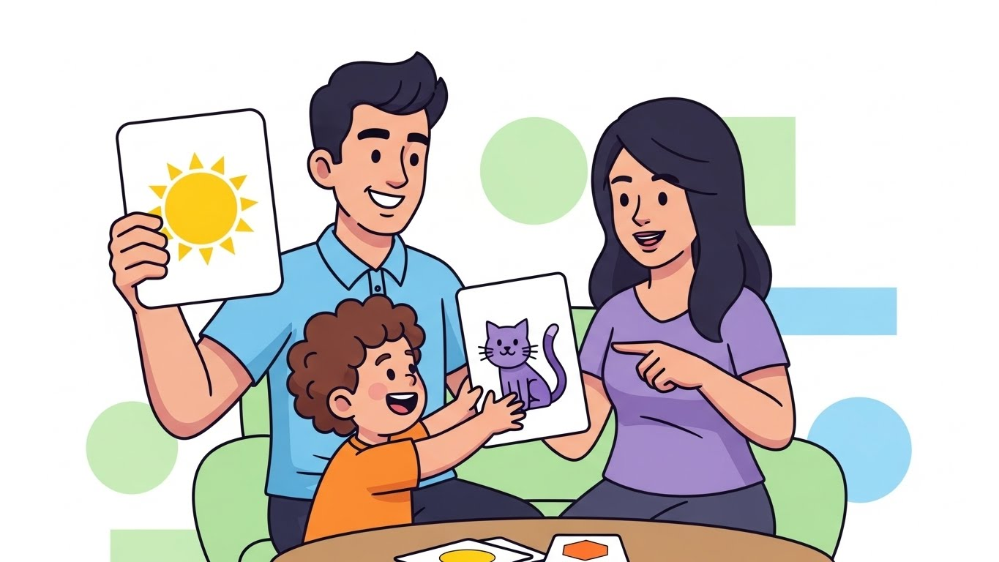
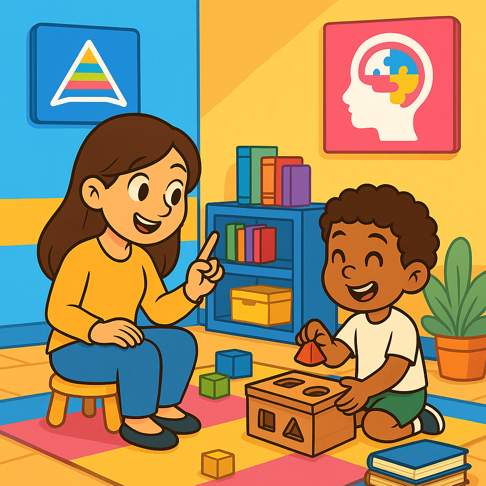

Terapias e Abordagens
teste
teste
Para caminhar com você
Aqui, a gente traduz o que importa sobre autismo, desenvolvimento e cuidado, em linguagem simples, para quem vive isso todos os dias.
Explore por tema
teste

Quando uma família recebe o diagnóstico de Transtorno do Espectro Autista (TEA), muitas perguntas surgem. Entre elas, uma se destaca acima de todas: “Onde meu filho será realmente bem cuidado?”...

Comunicação, vínculo e desenvolvimento construídos no dia a dia A fonoaudiologia no autismo em Porto Alegre é um dos pilares mais importantes no acompanhamento do desenvolvimento infantil. Para...

Desenvolvimento, autonomia e qualidade de vida desde a infância A terapia ocupacional para crianças com TEA em Porto Alegre é uma das intervenções mais completas e transformadoras dentro do cuidado...

A compreensão do Transtorno do Espectro Autista (TEA) evoluiu significativamente nas últimas décadas. O que antes era visto de forma limitada hoje é compreendido como uma condição do...

Nos últimos anos, a busca por informações sobre autismo em Porto Alegre cresceu significativamente. Pais, cuidadores e profissionais procuram compreender melhor os sinais, o diagnóstico, as terapias...

Quando uma família começa a suspeitar que algo diferente está acontecendo no desenvolvimento do seu filho, é como se um mundo inteiro se abrisse, repleto de dúvidas, receios, culpa, insegurança e...

Quando uma família recebe o diagnóstico de autismo, uma das primeiras buscas no Google é sempre a mesma: TERAPIA ABA.E junto dessa busca, surge um mar de informações, opiniões, relatos pessoais...

Quando você pensa em , talvez imagine protocolos, técnicas, escalas e metodologias. Tudo isso faz parte do processo, mas existe um elemento muito mais profundo, e que transforma completamente o...

Quando a família se torna o ponto de virada no desenvolvimento da criança autista Falar sobre autismo em Porto Alegre é falar sobre famílias que desejam fazer o melhor pelos seus filhos, mesmo quando...

Um guia completo para pais com foco no desenvolvimento infantil é uma jornada cheia de descobertas, conexões e momentos que moldam o futuro. Cada criança tem seu tempo e sua forma única de aprender...

O passo essencial para um futuro mais autônomo Em se tratando de desenvolvimento infantil e qualidade de vida, poucos fatores têm impacto tão profundo quanto o momento em que se realiza o DIAGNÓSTICO...

Como a CAA transforma a rotina das crianças com autismo Falar é apenas uma das formas de se comunicar. Para muitas , a linguagem verbal pode ser um desafio, mas isso não significa que elas não tenham...

Como Funciona e Por Que Escolher a HD 360 Moinhos? Em meio à rotina de desafios que o diagnóstico do Transtorno do Espectro Autista (TEA) pode trazer, surge uma pergunta que muitos pais e familiares...

Imagine um lugar onde cada pequeno gesto é celebrado.Onde o olhar é acolhido, o toque é compreendido e o progresso é uma conquista compartilhada.Esse lugar existe, e está bem aqui, em PORTO ALEGRE...
Ciência ABA: Qual o Papel dos Pais no Tratamento Comportamental? A Ciência ABA é uma ferramenta poderosa no tratamento de crianças com Transtorno do Espectro Autista (TEA), ajudando a desenvolver...
Nos últimos anos, o número de diagnósticos de autismo tem aumentado significativamente. Isso torna ainda mais importante contar com uma clínica de autismo em Porto Alegre que ofereça tratamento...
A Ciência ABA (Análise do Comportamento Aplicada) é uma abordagem científica desenvolvida para entender e modificar comportamentos. Focada na análise e intervenção de comportamentos observáveis, a...
O que é a Ciência ABA e por que é tão importante no tratamento do autismo? A Ciência ABA em Porto Alegre (Análise do Comportamento Aplicada) é uma metodologia científica voltada para a compreensão e...

Neurologista Infantil em Porto Alegre: Como Encontrar o Melhor Profissional para o Seu Filho Identificar e tratar condições neurológicas em crianças desde cedo é fundamental para garantir o...

Guia Completo para Pais e Cuidadores Escolher a clínica certa para o tratamento de autismo é uma decisão crucial para o desenvolvimento e bem-estar das crianças com Transtorno do Espectro Autista...

Distúrbios Alimentares Pediátricos: São um problema clínico de alto impacto, e tem consequências extremamente negativas para a criança e a família.Ocorrem entre 20% a 35% das crianças com...

Anteriormente: • Ensine-a a reconhecer o XIXI e o COCÔ;• Nomeie após cada troca de fralda ou após perceber que esta expressão, “carinha de cocô” ou agachar em algum comando de sua casa;• Observe e...

Di culdade de Aprendizagem ou Transtorno de Aprendizagem? As crianças com dificuldade de aprendizagem na alfabetização, ao receberem apoio direcionado, serão capazes de superar suas dificuldades e...